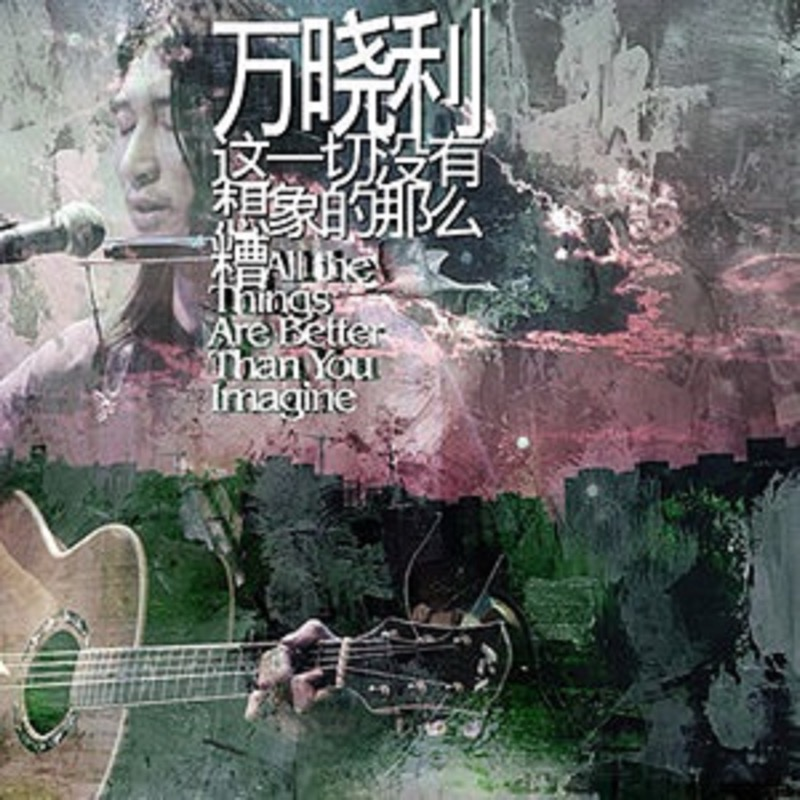

All the Things Are Better Than You Imagine 这一切没有想象的那么糟
2020 数字再发行版 · 11 首
2006 年前后被称作“新民谣”起点的两张唱片之一，另一张是苏阳的《贤良》。那几年万晓利买了电脑，大幅减少酒吧驻唱，在家里一点点自己录音、编曲，两三年才把这些歌做完。和早年酒吧现场的粗粝相比，这张明显收了起来，写的是房间、家庭、日常和内心独白。从老狼、叶蓓的校园民谣走过来，最先感到的差别不是旋律，而是他的声音并不努力取悦你：人声、吉他、停顿，都像生活里本来就有的东西。这里录的是 2020 年重新上架的数字版，比 2006 年原版 CD 多了一首《狐狸》，曲序也整个重排了。
歌词
Tracks
- 01这一切没有想象的那么糟3:33
据说是做完九首歌、心里的石头落地以后，为凑满十首在一个下午写出来的。原版里它放在最后，像听完整张才说出的一句话；数字版把它放在开头，先把答案告诉你，再带你回头看。
- 02狐狸3:28
2006 年原版 CD 里没有这首，是 2020 数字版补进来的。
- 03墓床5:16
从这首到《陀螺》这一段，不必抓歌词，听一把吉他和一个略显粗粝的人声怎么撑开空间。
- 04台阶下4:50
- 05陀螺4:44
旋律一听就耳熟：2015 年李健在《我是歌手》翻唱过，2025 年又成了电视剧《目之所及》的片尾曲。灵感来自带女儿去八一湖滑冰，看冰面上转圈的人；写出来却成了成年人的隐喻：一直被什么抽打着，累了想停，还是继续转。原版留着那种不修饰、有点硌人的生活质感。
- 06城堡6:41
- 07达摩流浪者3:30
喜欢这种松弛的感觉。比《陀螺》更松，吉他、人声、节奏都没有很强的推进欲，像人在路上晃着走，不急着抵达，也不急着给自己下定义。
- 08冬天的天空3:41
- 09鸟语5:15
- 10失3:38
- 11时光灯3:59
Credits
- 万晓利 — 演唱、制作
Notes
2006 原版与 2020 数字版
原版是 2006 年底十三月发行的 CD+DVD，CD 十首，从《陀螺》开始，以《这一切没有想象的那么糟》结束。2020 年的数字版由众水之音上架，11 首、48 分 40 秒，多了《狐狸》，曲序重排，标题曲挪到了第一首。原版是慢慢把人带进他的世界，最后才落下那句话；数字版反过来，先说结论。躺着一首接一首听，数字版的顺序反而顺耳。
粗粝的空间
这张唱片不要求你先把环境清空。它本来就是在家里录的，生活的痕迹没有被擦干净，所以雨天窗外车轮压过湿路的声音、隔壁房间的键盘声，都会和它黏在一起。音乐不是把人和现实隔开，而是在现实里留出一层缓冲。和 Nick Drake 的 Pink Moon 放在一起听也说得通：风格并不相似，但两个人都把民谣从“大家一起唱”变成了一个人在房间里和自己相处的声音。
从校园民谣到新民谣
据《爱乐》2026 年第十期回顾民谣二十年的文章，2006 年前后的“新民谣”不是一种统一的曲风，而是一群原本散落在酒吧、独立厂牌和现场的音乐人，开始有了名字和公共身份：万晓利、苏阳、小河、张玮玮、周云蓬、野孩子，彼此差别很大。老狼当年夜里失眠，重新拿出万晓利的 demo 听了好几遍，后来把它推荐给了十三月。校园民谣把一个场景唱给你听；万晓利是把一个没怎么整理的房间摆出来，让你自己的生活声音填进去。